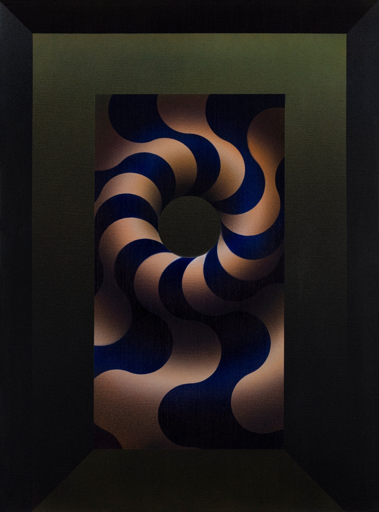

Julio Le Parc
Biografia
Nato nel 1928 a Mendoza (Argentina), a 15 anni entra nella Scuola delle Belle Arti di Buenos Aires diplomandosi. In età giovanile si avvicina al Mouvment art-concret-d’-invention, movimento spazialista animato da Lucio Fontana. Nel 1958 a seguito di una borsa di studio del governo francese si trasferisce a Parigi. Inizia un intenso periodo di ricerca legato all’analisi dei maggiori artisti d’avanguardia. In questi anni Le Parc lavora assiduamente in gruppo con altri artisti come Sobrino e critica, in particolare, l’opera di Vasarely, in quanto, alla base, possiede l’intenzione arbitraria di scegliere le forme e di comporre liberamente, giostrandoli, spazio e superficie. Le Parc, al contrario, postula un’arte che abbia alla base sequenze e progressioni spaziali. Proprio nel 1960 fonda con altri ricercatori francesi il GRAV (Groupe de recherches d’art visuel) e fino al 1968 ne è uno dei maggiori propulsori. L’atto costitutivo del GRAV è sottoscritto oltre che da Le Parc stesso da: Horacio Garcia Rossi, Francois Molnar, Francois Morellet, Moyano Servanes, Francisco Sobrino, Joel Stein, Yvaral (Jean Pierre Vasarely). Il movimento nasce come un vero e proprio collettivo che mette al centro del suo operare ricerche comuni legate ad aspetti puramente formali e visuali dell’arte. Il GRAV assieme ai collettivi che più o meno intorno agli anni ’60 nascevano in tutta Europa (Gruppo N, Gruppo T, Gruppo Zero, Gruppo Uno) confluirono in un grande movimento collettivo chiamato “Nuova Tendenza”: la «Nouvelle tendance» quale movimento di natura internazionale. Dal 1969 Le Parc ha ripreso, parallelamente ad altre esperienze, i suoi lavori sulla superficie (1959), in particolare i temi che comprendono la gamma di 14 colori e le loro combinazioni, partendo da sistemi organizzativi semplici e rigorosi. Questi lavori sono stati sviluppati in aspetti tematici come: onde, volumi, virtuali, insiemi di successioni di temi. Nel 1966 vince il Gran Premio internazionale di pittura alla Biennale di Venezia.

Theme 103 variation

Modultation 517
Le Parc pone lo spettatore al centro del fatto artistico, vuole che sia coinvolto attivamente con il suo muoversi e percepire lo spazio. Dal 1974 l’artista lavora alle “modulazioni”, un lavoro strettamente legato al rapporto pittura/superficie (acrilico su carta telata, acrilico su tela etc.) attivando per questo una ricerca su diversi temi investigativi. Nelle opere di Le Parc del museo si possono notare tutte le tecniche da lui usate. Serigrafia su tela, su carta e sfumature con aerografo e pennelli. Dal 1981 Le Parc collabora con la Biennale di San Martino di Lupari organizzata da Edoer Agostini, artista con il quale instaura oltre che un proficuo sodalizio artistico anche un vero rapporto di stima e amicizia reciproci.